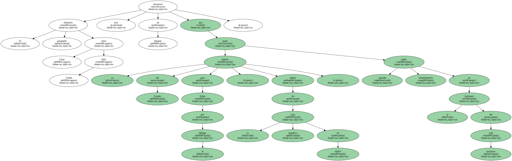
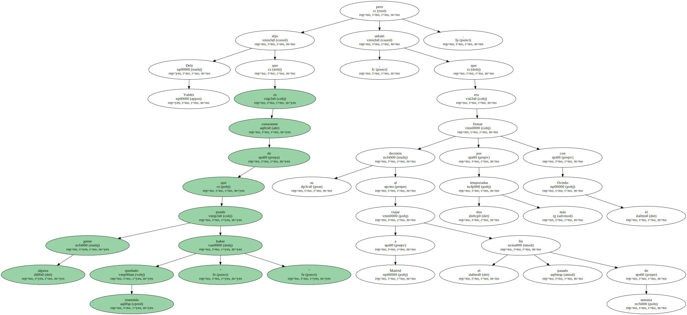
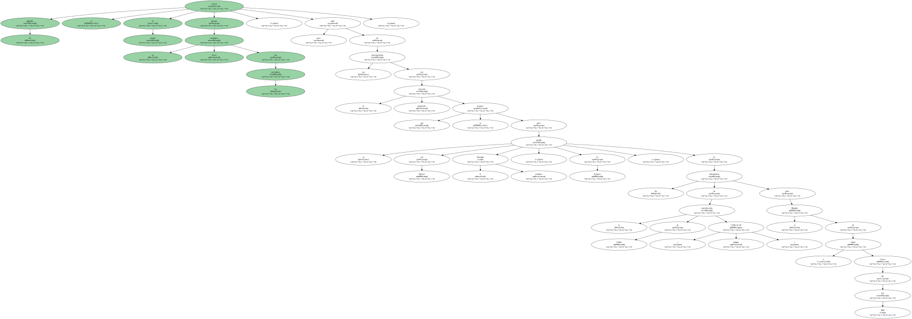
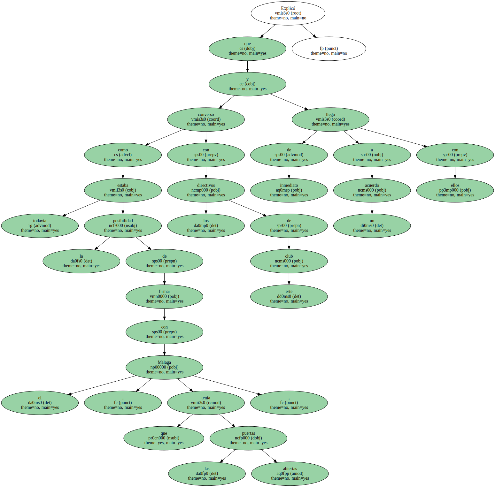
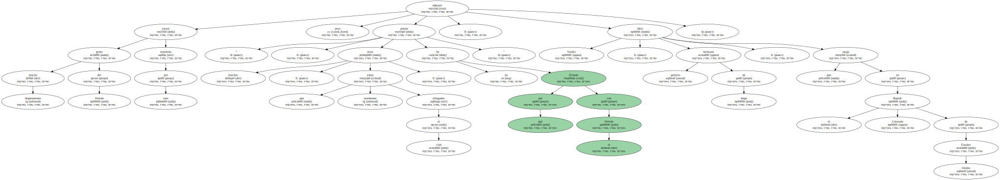
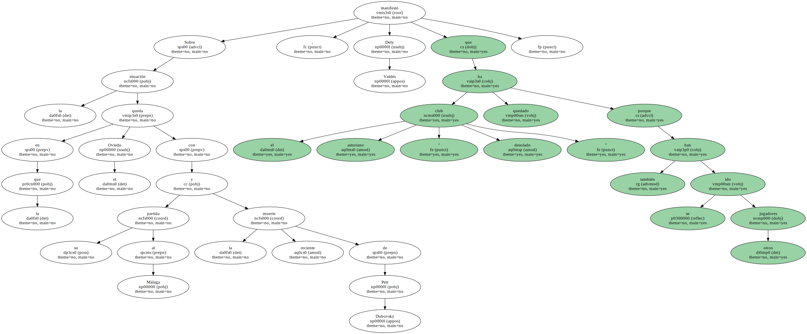
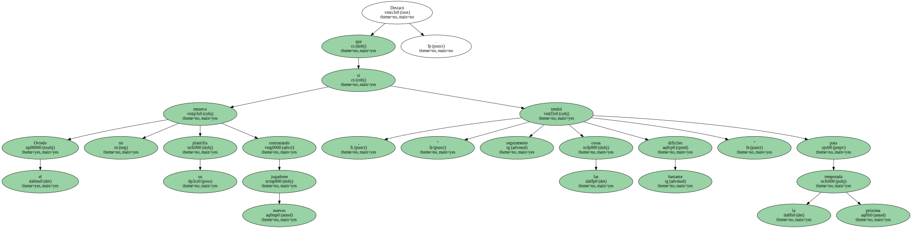

El delantero panameño Julio César Dely Valdés reconoció hoy en Panamá que su marcha del Oviedo para fichar por el Málaga , ambos de la Liga española de fútbol , pudo haber causado resentimientos en la hinchada del club asturiano.
Dely Valdés dijo que es consciente de que alguna gente puede haber quedado " resentida " , pero señaló que su decisión al viajar a Madrid el pasado fin de semana era firmar por dos temporadas más con el Oviedo.
Sin embargo , cuando llegó a Madrid se encontró con una " sorpresa " que no le gustó , indicó el jugador , sin precisar cuál fue la causa del desagrado que le llevó a desistir de su idea de seguir vinculado al Oviedo.

El goleador se refirió al asunto durante un breve encuentro con los periodistas , poco antes de sus entrenamientos con la selección panameña que se prepara para su partido con México el próximo domingo , en Panamá , en las eliminatorias de la confederación de Fútbol ( antigua CONCACAF ) para el Mundial de Japón y Corea del Sur 2002.
Explicó que como todavía estaba la posibilidad de firmar con el Málaga , que tenía las puertas abiertas , conversó con los directivos de este club y de inmediato llegó a un acuerdo con ellos.
" Seguramente mucha gente del Oviedo estará resentida por esto , pero muchos otros , que realmente están allegados al club , sabrán por qué no he fichado con el Oviedo " , subrayó Dely Valdés , hermano gemelo de Jorge , que juega en el Rapids Colorado de Estados Unidos.
Sobre la situación en la que queda el Oviedo con su partida al Málaga y la reciente muerte de Petr Dubovsky , Dely Valdés manifestó que el club asturiano ha quedado " desolado " porque también se han ido otros jugadores.
Destacó que si el Oviedo no renueva su plantilla contratando nuevos jugadores , " seguramente tendrá las cosas bastante difíciles " para la próxima temporada.
